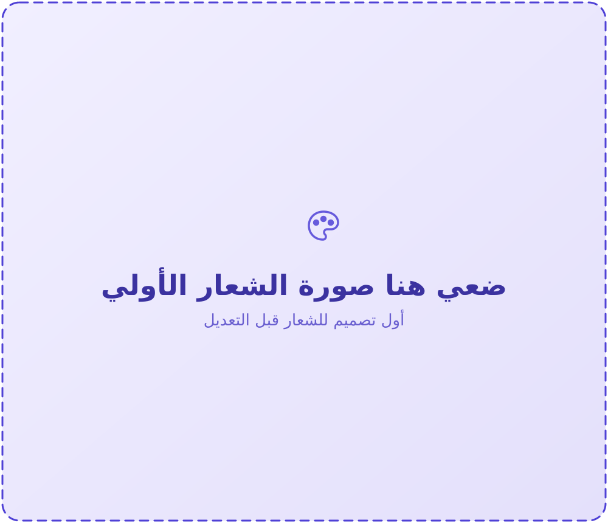
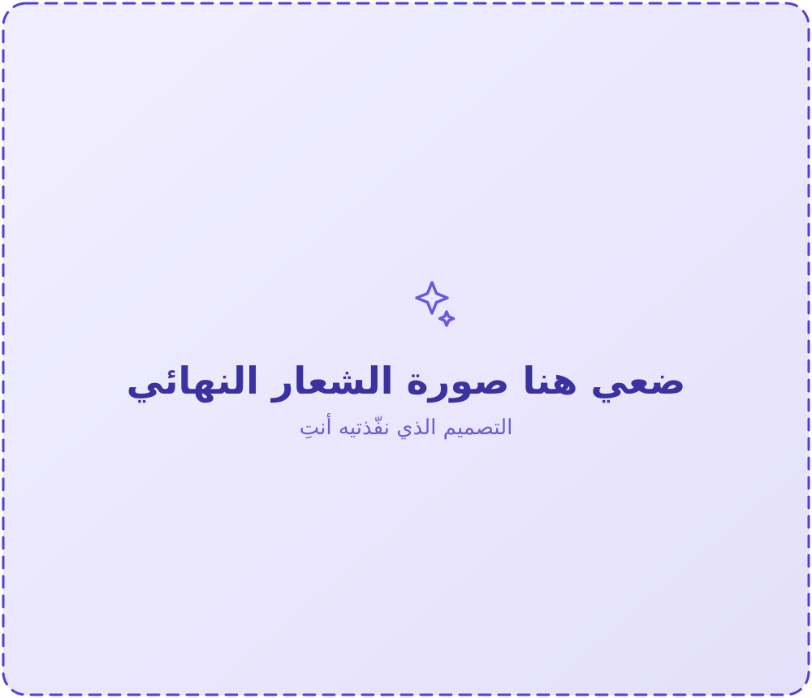
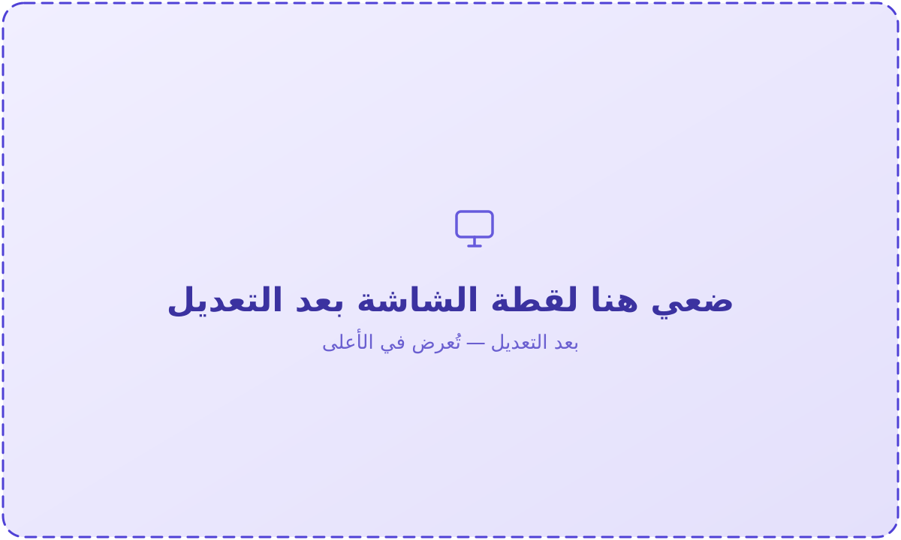
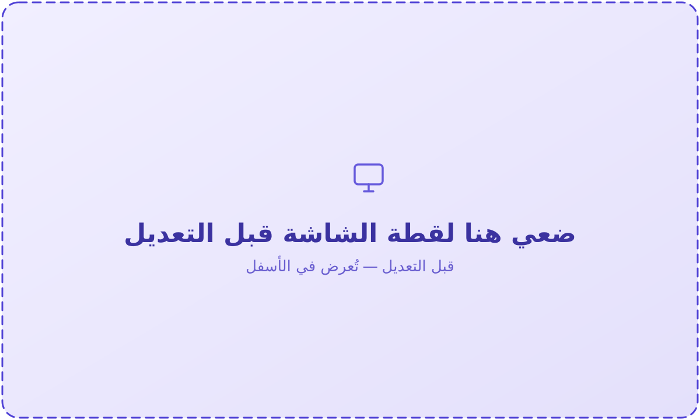

الرئيسية
سجل المهام
توثيق مراحل تنفيذ مشروع أمانك — من الفكرة إلى التنفيذ
المهمة الأولى
تصميم الشعار — تطبيق أمانك

تنفيذ الشعار
تنفيذ الشعار

نُفِّذ الشعار باستخدام برنامج: Canva
ألوان الصفحات في الموقع متناسقة مع ألوان الشعار النهائي.
التسجيل الرابع
التسجيل الرابع — قبل وبعد التعديل

